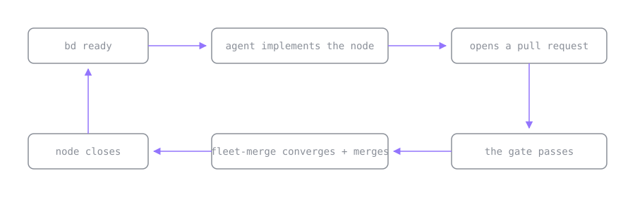

Two graphs run my coding agents: one picks the work, one decides it is done
The setup
Hand real work to a coding agent and two problems show up, one at each end of the same job.
At the start: what should it do next? A long project is a web of dependencies. Task B needs A finished first, C and D can go in parallel, E is blocked on both. Hold that in a flat TODO and the agent picks the wrong thing, and the plan dies with the context window that held it.
At the end: is this actually done? The agent opened six pull requests. CI is green on four. One has a review comment
nobody resolved. One looks merged-ready but the approval is sitting on a commit three pushes old. Which of the six can
you actually merge, right now, without breaking main?
I reach for a different tool at each end. Beads for the first, a skill I wrote
called fleet-merge for the second. I used them for months before I noticed they are the same idea in two places.
The first graph: what is ready to start
Beads is Steve Yegge’s issue tracker for AI agents. Its one good idea, the one everything else hangs off, is that work is a directed graph. A task is a node. A dependency is an edge. You do not tell the agent what to do; you describe the shape of the work and let it ask the graph.
# two nodes and an explicit edge between them
bd create "Add auth middleware" # -> bd-1
bd create "Protect /admin routes" # -> bd-2
bd dep add bd-2 bd-1 # bd-2 is blocked by bd-1 until it closes
# the only question the agent actually asks:
bd ready
# bd-1 Add auth middleware (no open blockers)bd ready is the one command that matters. It returns the nodes whose dependencies are all satisfied, which is exactly
the set of things that can be worked right now. Finish bd-1, close it, and bd-2 falls into the ready set on its own.
The agent never guesses at order, because the graph recomputes it on demand; there is no plan to remember.
The other half is that the graph is git-backed, so it survives the thing agents are worst at:
forgetting. Context windows roll over and the session dies, but the DAG is committed next to the code. A fresh agent
runs bd ready and is immediately oriented, no re-briefing. The graph is the memory.
So beads answers the start-of-work question, and it answers it structurally: ready work is a node with no unmet dependencies.
The second graph: what is ready to finish
fleet-merge is a skill I wrote to close the other end. Point it at a repo with open pull requests and it watches them
until each one is genuinely mergeable, then merges it with whatever method the repo allows. When one of them needs a
human decision it stops and says so, rather than sitting in the loop burning polls.
I did not think of it as a graph tool when I wrote it. It is. The pull requests are nodes. Two pull requests that touch the same file have an edge between them: whichever merges second has to rebase, so the two cannot land in parallel and have to be serialized by hand. The edge does for merging what a beads dependency does for starting: it takes parallel off the table. And every node has the same question hanging over it that beads asks at the other end, only inverted: beads asks whether a node can start, fleet-merge asks whether it can finish.
The answer is a gate: four conditions that must all hold before a pull request may merge. What makes it worth writing down is that not one of them is satisfied by the signal GitHub shows you. Three of the four exist because an obvious green light has a look-alike failure behind it; the fourth marks the one decision the loop is not allowed to make.
| GitHub shows you | Why that is not done | What the gate requires |
|---|---|---|
| No red X | a check still running has no verdict yet, so “not failing” gets read as “passed” | every check finished, none of them failed |
| An APPROVED review | the approval may sit on a commit you have since pushed over | a sign-off on the commit that is there now |
| Zero unresolved threads | a reviewer can file notes that never become blocking threads, so the count stays zero while a real finding sits hidden | no suppressed comments, checked every round |
| A perfectly green release PR | cutting a release is a human decision | that the pull request is not a release |
The third row is the one that catches real bugs. Those notes arrive collapsed, one click out of view, and the review summary above them still says “no new comments” in good faith. The best find yet was a test asserting on a string that both the success path and the error path emit, so it would have passed on the exact failure it was written to catch. Nothing in the interface was red.
Row two assumes a sign-off exists, so it is worth asking where one comes from. A teammate can review the pull request, and on a repo full of agent-written changes that is exactly the bottleneck you were trying to remove. The usual answer is an automated code reviewer, which works until the reviewer quietly skips a run: no review is posted, no error is raised, and the pull request simply waits for a verdict that is never coming.
Rather than wait, fleet-merge runs the review itself, and the part worth stealing is how it decides who runs it. It does not pick a number of reviewers and fill the slots. It reads the diff and assigns one specialist per failure class: a correctness reviewer when behavior changes, a silent-failure hunter when the change touches error paths or a check that can pass while proving nothing, a comment analyzer when prose describes the code, a test analyzer when a test claims something is now guarded. A one-file fix draws a single reviewer. A migration draws a crowd. The diff decides who shows up.
The first three rows are the same refusal written down once, so a loop can apply it without me: a signal that resembles
done is not done, the same way bd ready refuses a node that still has an open blocker. The fourth row is not a trap;
it is a boundary, the finish that stays mine. That is the end-of-work question answered structurally: finishable work
is a node whose gate passes on its current state.
The same move, twice
Side by side:
| beads | fleet-merge | |
|---|---|---|
| Node | a task | a pull request |
| Edge | this task needs that one first | these two touch the same file |
| The gate | dependencies satisfied | CI, fresh sign-off, no hidden notes, not a release |
| The question | what can start | what can finish |
| Who walks it | the coding agent | the merge loop |
Sit with the gate row for a moment, because it is the row that does the work: both cells refuse to act on anything less than the written condition. The rest follows from it. Model the work as a graph, write down what ready and done actually mean, and let an engine walk it.
None of which is a new idea, and I want to be careful not to dress it up as one. Build systems have worked this way
since the 1970s. make does not ask you what to compile next; it walks a dependency graph and rebuilds what is stale.
Bazel and Nix went further and made the gate strict, because a target that merely looks up to date is the oldest bug in
the genre. Schedulers, CI pipelines, package managers: the same machine.
What is new is what the graph drives. Those systems drove a compiler; here the graph drives an agent that writes the
code and opens the pull request. The part I built is the gate, and the agent is why it has to be strict: make gets
staleness wrong mechanically, from a bad timestamp or a missing dependency, but the agent that wrote the code gets
doneness wrong agreeably. It wants the task to be done, so an ambiguous signal reads as success. Leave the verdict to
the one who did the work and it grades itself a pass; the gate is the second opinion, written down so a loop can hold
it.
The loop neither one closes
Here is what got me to write this down. Each tool owns one end, and there is an obvious pipe between the ends that nothing currently connects:

In that picture, beads emits a ready node. The agent builds it and opens a pull request. fleet-merge watches that pull request until its gate passes, merges it, and the corresponding beads node closes, which drops the next node into the ready set. The graph empties itself, and the human watches two sets of gates instead of driving every step.
To be clear about where this stands: those two graphs are not wired together today. I run beads by hand and fleet-merge by hand, and the diagram shows where the pipe would go once I build it. Building that bridge, and showing a real dependency graph drain to a stack of merged pull requests without me touching the middle, is the next post.
Closing
I set out to stop my agents from picking the wrong task, and to stop myself from merging half-reviewed code. Two narrow tools, two opposite ends of the work, and both fixes turned out to be the machine your build system has been running all along. The graph carries the plan and the memory. The gate does the judging I used to do by hand, one pull request at a time.
Nothing here needs inventing. Put the work in a graph, write the gates down honestly, and let the engines do the walking. That is the whole post.